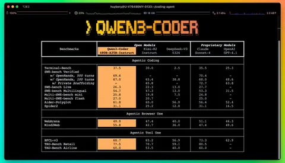

Alibaba представила Qwen3-Coder — новую MoE-модель, заточенную под задачи программирования. Самая крупная версия — на 480 миллиардов параметров, из которых активные — 35 миллиардов. Контекстное окно Qwen3-Coder-480B-A35B-Instruct составляет 256 тысяч токенов с возможностью расширения до миллиона с помощью YaRN. Число поддерживаемых языков программирования — 358.
Qwen3-Coder адаптирован для агентного программирования (Agentic Coding) — то есть модель не просто пишет код, а полноценно использует инструменты и принимает решения. Ранее в июле Moonshot AI представила MoE-модель KIMI-K2, которая тоже поддерживает агентное программирование. Заметен переход к нему.
Qwen3-Coder тренировали на 7,5 триллиона токенов, 70% из которых — код. Для очистки и перезаписи шумных данных использовали Qwen2.5-Coder. Во время RL модель учили на реальных задачах, которые нужно было решать с помощью различных инструментов. Здесь на помощь пришла инфраструктура Alibaba Cloud — на её основе инженеры компании построили систему из 20 тысяч параллельных изолированных сред для обучения.
В результате, как сообщают разработчики, Qwen3-Coder демонстрирует лучшие результаты на SWE-Bench Verified среди всех открытых моделей, а по качеству решение Alibaba сопоставимо с Claude Sonnet 4. Опробовать Qwen3-Coder можно по ссылке.
Вместе с новой моделью Alibaba открыла и код инструмента командной строки для агентного программирования — Qwen Code, основанного на форке Gemini Code. В него добавили кастомные подсказки и протоколы вызова функций.
Душный NLP
